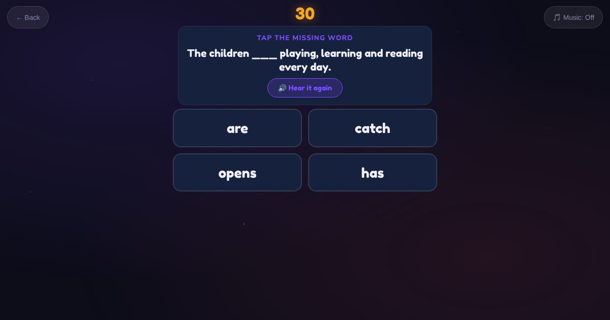

For teachers and tutors
About Elementary Listen and Fill Gaps
A listening gap-fill with longer sentences, like "She ___ at the fish shop on the main street." The sentences use the Elementary sound patterns (sh, ee, oo, ai), so listening and phonics go together. The learner types the missing word, or taps it in multiple choice.

How to play
- Listen to the sentence.
- Find the gap.
- Type or tap the missing word.
Play it as a class
Choose Elementary Listen and Fill Gaps in the Teacher Game.